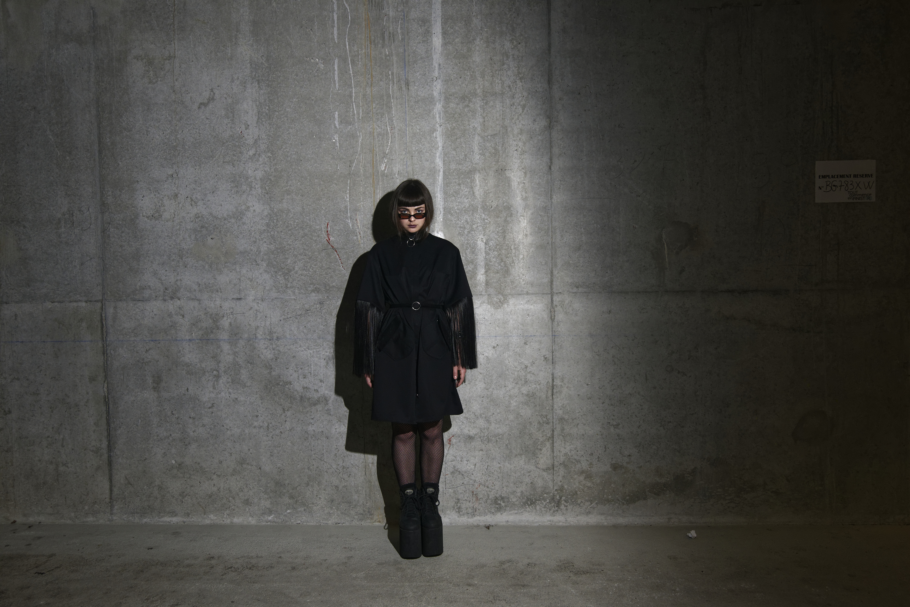

This project was commissioned by a stylist in training. The universe had to be cold, almost industrial while evocative of the underground night world. We chose to take these shots in a parking lot under low lights, the flash cutting out the different scenes in this universe of shadow and concrete.

Here, the light is both inquisitive and revealing.The flash is strong and hard, like the flashes of the tabloids trying to break the scandal out of the night into daylight. It is an insidious snapshot that punctuates the sulfurous movements of the fabric.